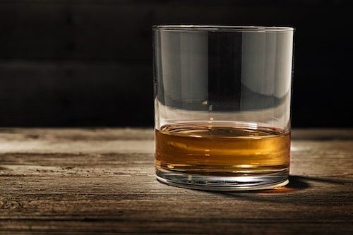

Overview
Scotch whisky (often simply called Scotch) is malt whisky or grain whisky made in Scotland. Scotch whisky must be made in a manner specified by law.
All Scotch whisky was originally made from malted barley. Commercial distilleries began introducing whisky made from wheat and rye in the late 18th century. Scotch whisky is divided into five distinct categories: single malt Scotch whisky, single grain Scotch whisky, blended malt Scotch whisky (formerly called "vatted malt" or "pure malt"), blended grain Scotch whisky, and blended Scotch whisky.
All Scotch whisky must be aged in oak barrels for at least three years. Any age statement on a bottle of Scotch whisky, expressed in numerical form, must reflect the age of the youngest whisky used to produce that product. A whisky with an age statement is known as guaranteed-age whisky. A whisky without an age statement is known as a no age statement (NAS) whisky, the only guarantee being that all whisky contained in that bottle is at least three years old.
Comparison To Other Whisk(e)ys
Outside of Scotch whisky, there are several other types of whisky found all over the world. Some of the most commonly recognized whiskies include:
- Whiskey/Whiskey, a broad category of distilled liquor made from fermented grain mash.
- Bourbon, an American whiskey (specifically distilled in Kentucky) made from at least 51% corn
- Rye Whiskey, which can refer to either American whiskey containing at least 51% rye wheat, or to Canadian whisky (which may not include rye wheat in the production process at all).
A common confusion among drinkers of whiskey/whisky is which spelling is correct; in short, both spellings are correct depending on the country of origin. Generally, the United States and Ireland refer to their beverage as "whiskey", whereas other countries in Europe and Asia will use the term "whisky". Where the original variation in spelling came from is still a matter of debate. Legend has it that during the 1800s, most Scotch Whisky was considered as very low quality: because of this, American and Irish distillers began adding the “e” in order to show a point of distinction to consumers that the quality of their whiskey was higher than that of Scotch.
Legal Definition
As of 23 November 2009, the Scotch Whisky Regulations 2009 (SWR) define and regulate the production, labelling, packaging as well as the advertising of Scotch whisky in the United Kingdom. They replace previous regulations that focused solely on production. International trade agreements have the effect of making some provisions of the SWR apply in various other countries as well as in the UK. The SWR define "Scotch whisky" as whisky that is:
- Produced at a distillery in Scotland from water and malted barley (to which only whole grains
of other cereals may be added) all of which have been:
- Processed at that distillery into a mash
- Converted at that distillery to a fermentable substrate only by endogenous enzyme systems
- Fermented at that distillery only by adding yeast
- Distilled at an alcoholic strength by volume of less than 94.8% (190 US proof)
- Wholly matured in an excise warehouse in Scotland in oak casks of a capacity not exceeding 700 liters (185 US gal; 154 imp gal) for at least three years
- Retaining the color, aroma, and taste of the raw materials used in, and the method of, its production and maturation
- Containing no added substances, other than water and plain (E150A) caramel coloring
- Comprising a minimum alcoholic strength by volume of 40% (80 US proof)